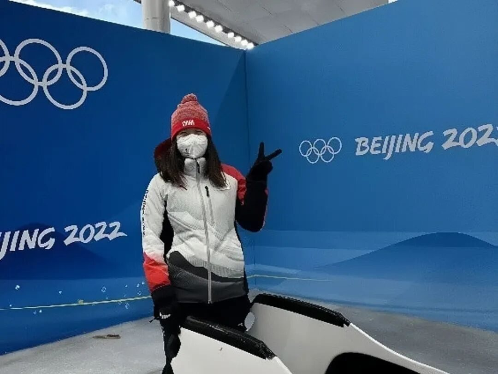
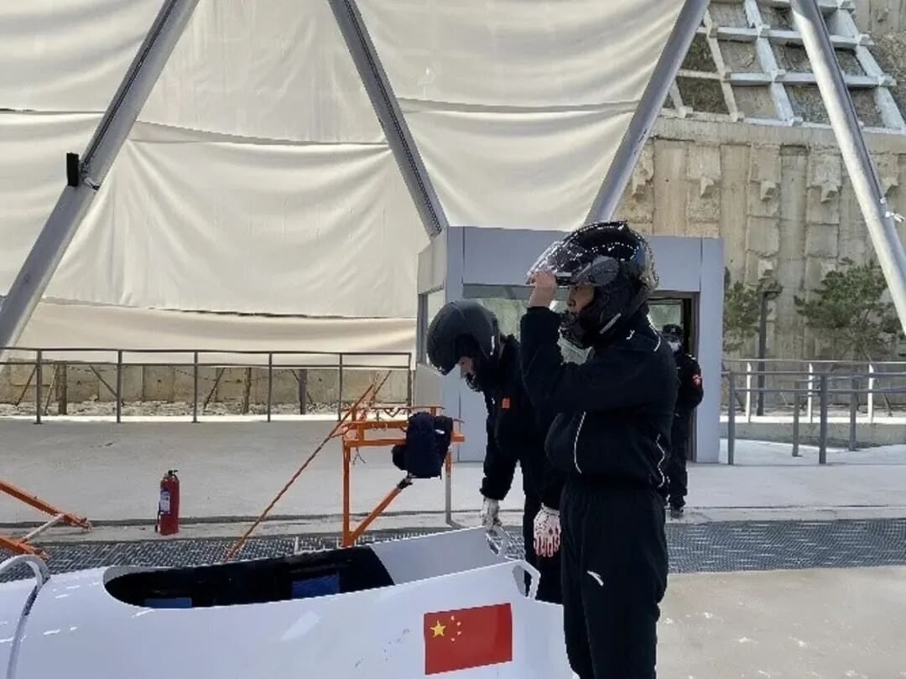
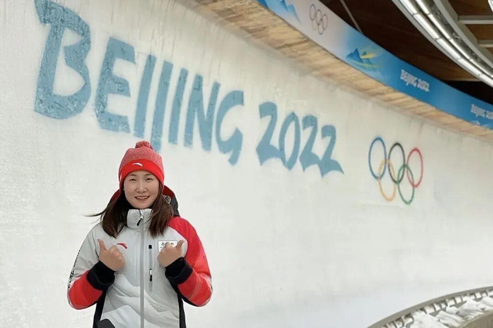
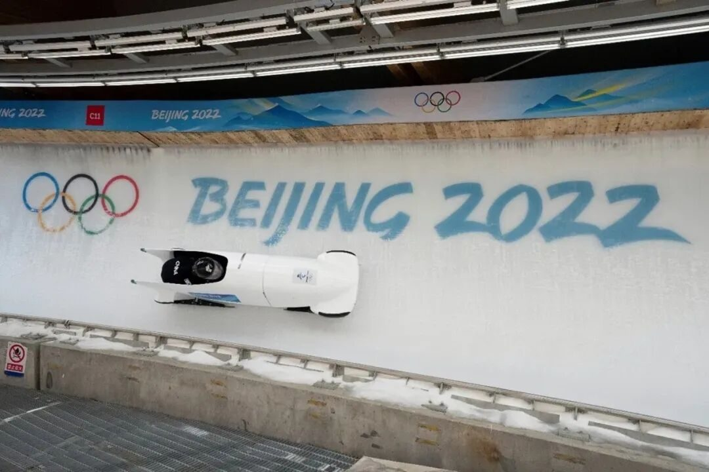

服务冬奥，勇敢追梦
服务奥运，贡献青春力量
勇敢追梦，不畏艰难曲折
实践第二天晚上，我们采访到了仰慕已久的鲁春阳学姐。通过讲述她的冬奥经历，我们感受到运动员们对梦想的坚持和热爱以及训练的艰毅和刻苦。
光环的背后
与学姐的交谈，让我们仿佛亲临冬奥会现场，感受现场的震撼的震撼，感受到各运动员的亲切近人、坚持乐观，感受到体育的魅力。
身为试滑员的鲁春阳学姐既需要优秀的专业素质，更需要细心、敏锐，精力高度集中，走在运动员前面，以另一种形式“上场”。试滑员们往往会进行多达五百次次至上千次的试滑，只为保证赛事的完美进行。


使命和责任
鲁春阳学姐在德国比赛的间隙拨冗回答了我们关于双人雪车项目和冬奥试滑的相关问题，听了她大概的成长经历和训练过程，我们感受到得天独厚的天赋和夜以继日的努力都是成为一个优秀运动员必不可少的条件。
从跨栏到雪车，不仅仅改变了是鲁春阳学姐的体育生涯，更体现了中国对雪车项目的重视程度。鲁春阳学姐说，雪车是人，车，技术三方面的相结合。我国是最晚接触雪车项目的，虽在雪车材料上有所优势，在经验和机械结构上依旧任重而道远。


冬奥之精神
在奥运会的赛场上，闪耀的不止是奖牌，喝彩并不只属于领奖台。跨界进入中国雪车国家队，并在冬奥会中承担了雪车项目NTO试滑员工作，对于学姐来说，是在实现自己的冬奥梦，更是为建设冰雪强国贡献自己的力量。
参加奥运会，是每个运动员的梦想，以各种身份实现了另一种形式的“上场”更是体现了对梦想的坚持和热爱。鲁春阳学姐在采访中提到，在一个个激动人心的瞬间背后，在一次次动人心魄的突破背后，在一枚枚闪光的奖牌背后，都能看到运动员韧性十足、动人心弦的努力付出，都能感受到运动员对梦想、对热爱的执着。
身为大学生的我们，可能很难在体育赛场上为国争光，但我们要像鲁春阳学姐一样，在各自的领域发光发热，将“胸怀大局、自信开放、迎难而上、追求卓越、共创未来”的北京冬奥精神传递下去！


滑动查看更多
为了冰雪王国的建设
每个人都在奉献力量
即使是在观众看不到的地方
胸怀大局 一片冰心
最终不负使命
行者们为他们感到由衷骄傲！
祝愿每一分努力都能被看见
祝鲁春阳学姐再创佳绩！
来源 | 行者无疆实践团
图片 | 鲁春阳
文字 | 张霖茜
排版 | 崔雨琪
审核 | 周奕彤 崔雨琪


行
者
这个冬天我们一起踏冰逐梦！